🧗 Highest Points
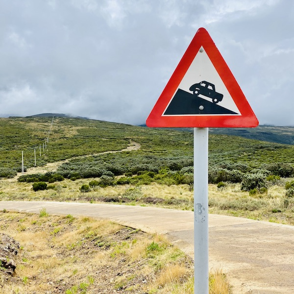
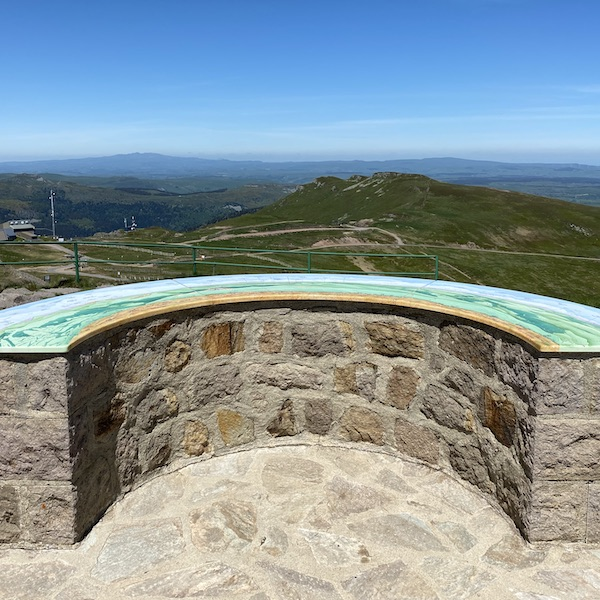
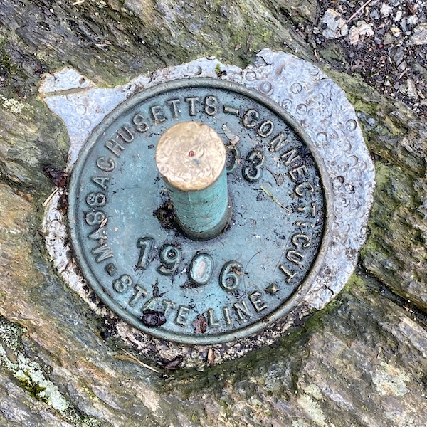
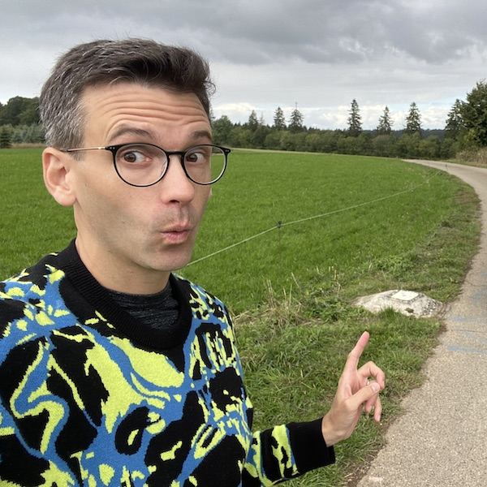
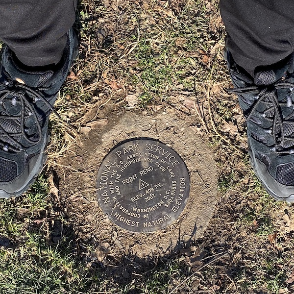
5199 🇰🇪
Mount Kenya
🥾
4810 🇫🇷 🇮🇹
Mont Blanc
👀
4401 🇺🇸
Mount Elbert
Rocky Mountains
4392 🇺🇸
Mount Rainier
Washington State
🥾
3776 🇯🇵
Mount Fuji
👀
1886 🇫🇷
Puy de Sancy
Massif Central
1855 🇫🇷
Plomb du Cantal
Massif Central, 2nd
1853 🇷🇼
Mount Kigali
Kigali Province, 2nd
1740 🇺🇸
Mount Rogers
Virginia
(20 km)
1345 🇬🇧
Ben Nevis
1184 🇻🇺
Mount Yasur
Tanna, active volcano
1085 🏴
Snowdon
1063 🇺🇸
Mount Greylock
Massachusetts
(15 km)
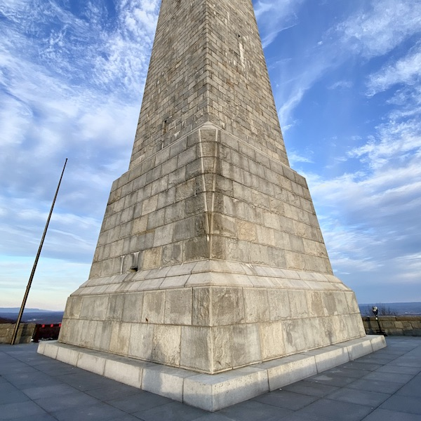
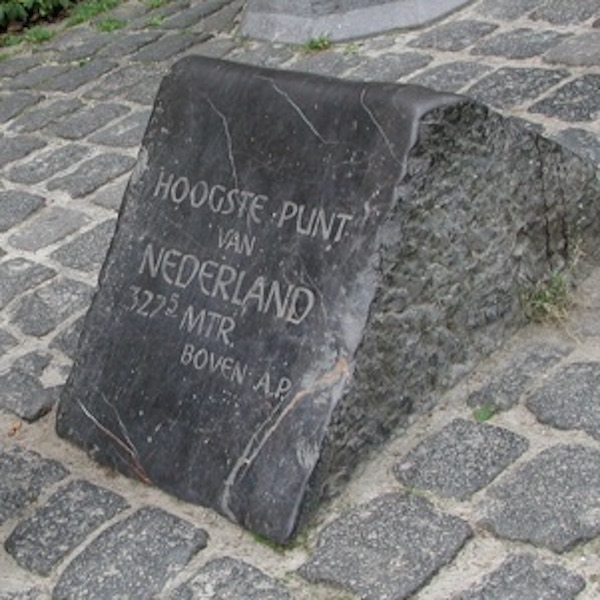
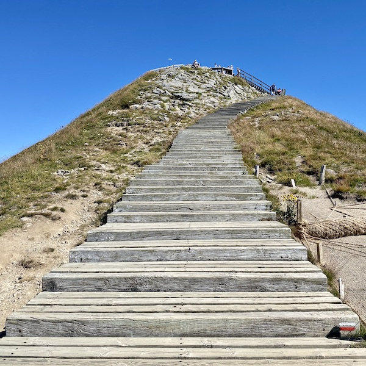
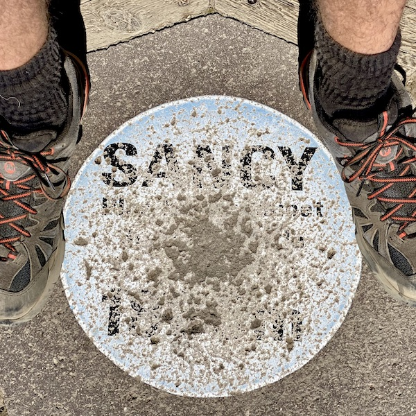
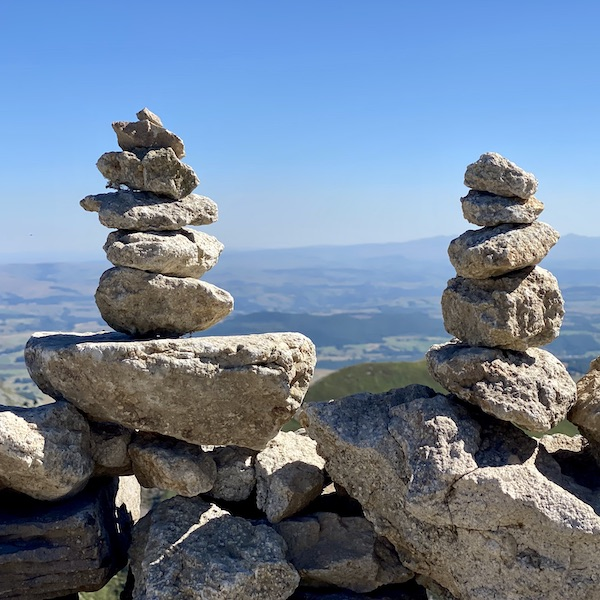
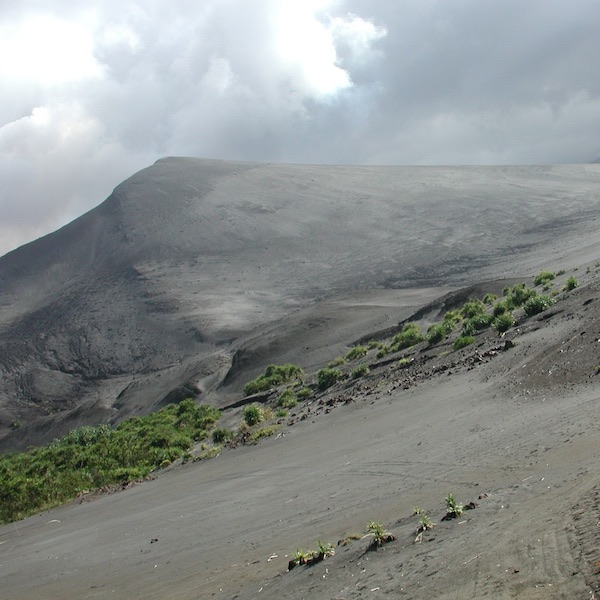
748 🇺🇸
Mount Frissell
Connecticut
731 🇺🇸
Mount Constitution
San Juan Islands
694 🇧🇪
Signal de Botrange
560 🇱🇺
Kneiff
550 🇺🇸
High Point
New Jersey
322 🇳🇱
Vaalserberg
247 🇺🇸
Jerimoth Hill
Rhode Island
137 🇺🇸
Ebright Azimuth
Delaware
(5 km)
125 🇺🇸
Fort Reno Park
Washington, DC
8848 🇳🇵 🇨🇳
Mount Everest
Earth
8611 🇵🇰 🇨🇳
K2
8586 🇳🇵 🇮🇳
Kangchenjunga
7570 🇧🇹 🇨🇳
Gangkhar Puensum
7495 🇹🇯
Ismoil Somoni Peak
7492 🇦🇫
Noshakh
7439 🇰🇬
Jengish Chokusu
7010 🇰🇿
Khan Tengri
6960 🇦🇷
Aconcagua
6893 🇨🇱
Ojos del Salado
6768 🇵🇪
Huascarán
6542 🇧🇴
Sajama
6267 🇪🇨
Chimborazo
6190 🇺🇸
Denali
5959 🇨🇦
Mount Logan
5642 🇷🇺
Mount Elbrus
5636 🇲🇽
Volcán Citlaltépetl
5137 🇹🇷
Mount Ararat
5109 🇨🇩
Mount Stanley
4892 🇦🇶
Mount Vinson
4643 🇺🇿
Khazret Sultan
4634 🇨🇭
Dufourspitze
4509 🇵🇬
Mount Wilhelm
4507 🇷🇼
Mount Karisimbi
3952 🇹🇼
Yu Shan
3798 🇦🇹
Grossglockner
3724 🇳🇿
Mount Cook
3715 🇪🇸
Teide
3700 🇬🇱
Gunnbjørn Fjeld
3475 🇵🇦
Volcán Barú
3450 🇿🇦
Mafadi
3143 🇻🇳
Fansipan
3088 🇱🇧
Qurnat as Sawdā
3069 🇷🇪
Piton des Neiges
2995 🇧🇷
Pico da Neblina
2962 🇩🇪
Zugspitze
2954 🇵🇭
Mount Apo
2952 🇦🇩
Coma Pedrosa
2925 🇧🇬
Musala
2917 🇬🇷
Mount Olympus
2864 🇸🇮
Triglav
2829 🇨🇻
Pico do Fogo
2772 🇬🇾
Mount Roraima
2764 🇦🇱
Korab
2764 🇲🇰
Golem Korab
2744 🇰🇵
Mount Paektu
🎶
2660 🇽🇰
Velika Rudoka
2655 🇸🇰
Gerlachovský Štít
2629 🇪🇬
Mount Catherine
2599 🇱🇮
Grauspitz
2544 🇷🇴
Moldoveanu
2534 🇲🇪
Zla Kolata
2500 🇵🇱
Rysy
2469 🇳🇴
Galdhøpiggen
2419 🇳🇬
Chappal Waddi
2386 🇧🇦
Maglić
2351 🇵🇹
Montanha do Pico
2228 🇦🇺
Mount Kosciuszko
2169 🇷🇸
Midžor
2110 🇮🇸
Hvannadalshnúkur
2097 🇸🇪
Kebnekaise
2061 🇺🇦
Hoverla
2024 🇸🇹
Pico de São Tomé
1974 🇨🇺
Pico Turquino
1951 🇨🇾
Mount Olympus
1950 🇰🇷
Halla-san
1915 🇺🇸
Mount Washington
New Hampshire
1877 🇻🇺
Mount Tabwemasana
1862 🇸🇿
Emlembe
1831 🇭🇷
Phnom Aural
1682 🇳🇨
Mont Panié
1628 🇺🇸
Mount Marcy
New York State
1603 🇨🇿
Sněžka
1482 🇺🇸
Spruce Knob
West Virginia
1340 🇺🇸
Mount Mansfield
Vermont
1324 🇫🇮
Halti
1230 🇸🇷
Juliana Top
1208 🇮🇱
Mount Hermon
1208 🇸🇾
Mount Hermon
1038 🇮🇪
Carrauntoohil
1027 🇺🇸
Hoye-Crest
Maryland
1014 🇭🇺
Kékes
979 🇺🇸
Mount Davis
Pennsylvania
958 🇭🇰
Tai Mo Shan
739 🇸🇲
Monte Titano
621 🇮🇲
Snaefell
430 🇲🇩
Bălănești Hill
426 🇬🇮
Rock of Gibraltar
346 🇧🇾
Dzyarzhynskaya Hara
318 🇪🇪
Suur Munamägi
312 🇱🇻
Gaiziņkalns
294 🇱🇹
Aukštojas Hill
253 🇲🇹
Ta’Dmejrek
171 🇩🇰
Møllehøj
164 🇸🇬
Bukit Timah Hill
136 🇯🇪
Les Platons
114 🇬🇬
Le Moulin
49 🇰🇾
The Bluff
15 🇮🇴
Diego Garcia
10 🇲🇭
Marshall Islands
5 🇲🇻
Maldives
5 🇨🇨
Cocos
5 🇹🇰
Tokelau
4 🇹🇻
Tuvalu
{kind=link}
{kind=link}
 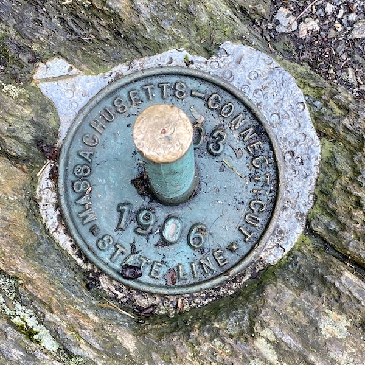
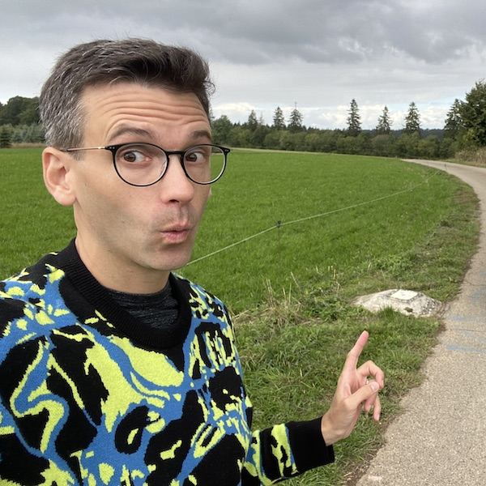
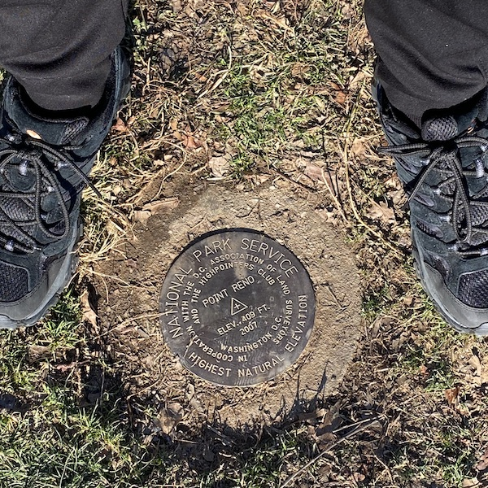
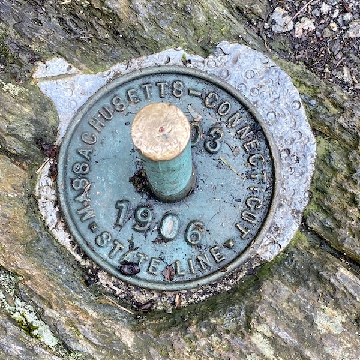
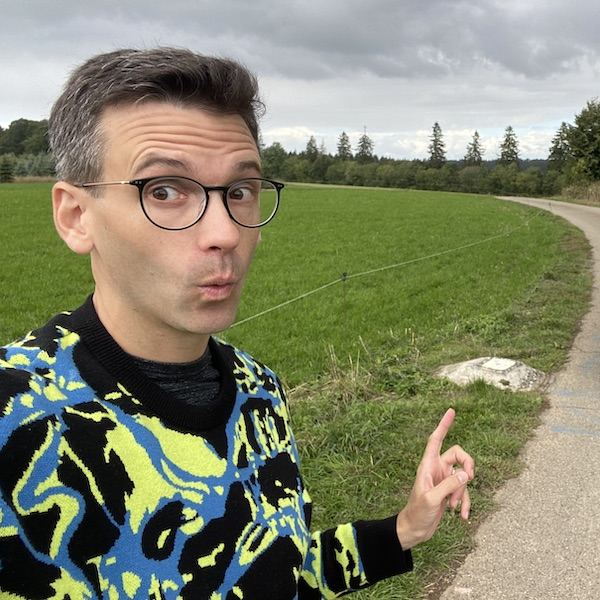
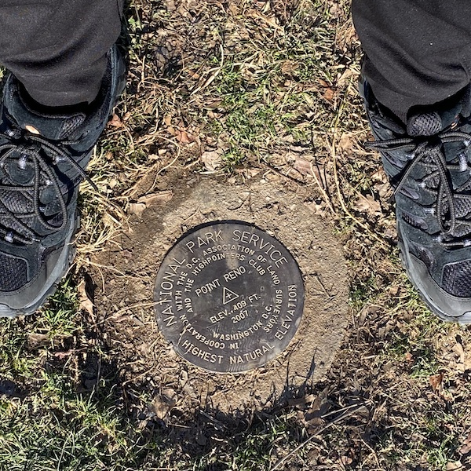
{kind=link}
{kind=link}
{kind=link}
{kind=link}
{kind=link}
{kind=link}
{kind=link}
{kind=link}
{kind=link}